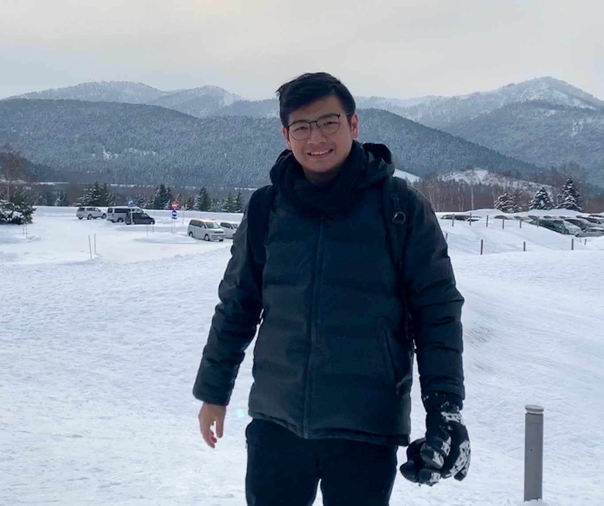
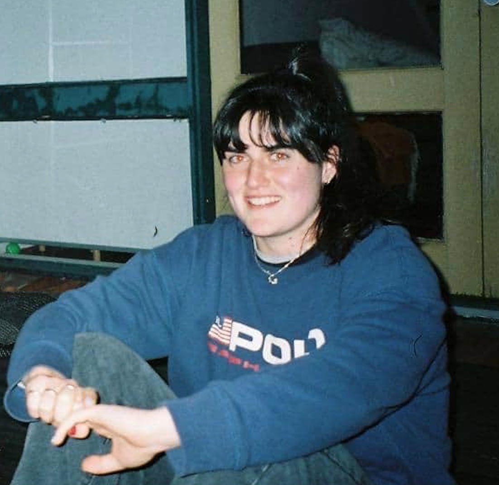
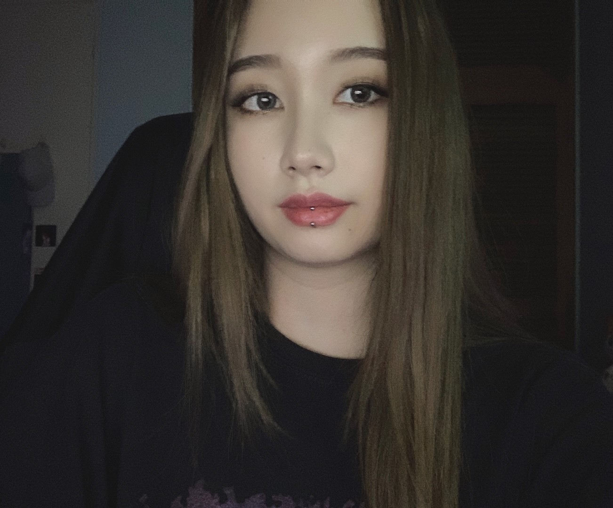
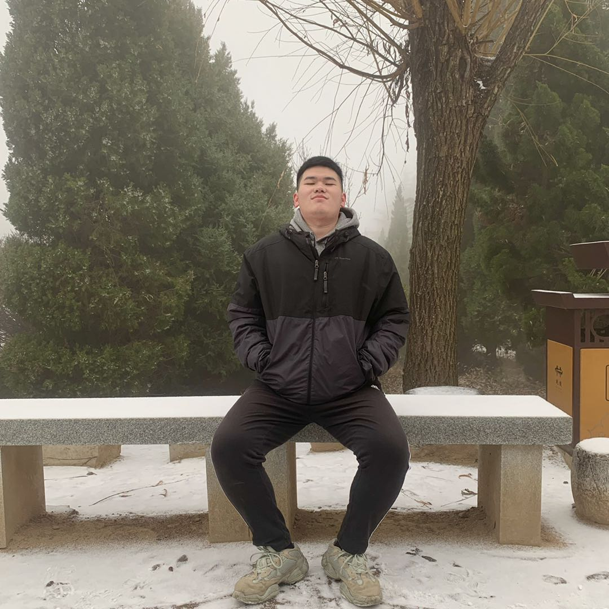

LAMAYA
| Home | Our Project | Demonstratable Outcome | Project Justification | How | Timeline | Meetings |
Abigail Dineen | s3807423

I have been studying a Bachelor of Information Technology for 4 years now, as I am a part time student. I began my studies at Monash University, and transferred to RMIT Semester 2 2019. I have had an interest in working in IT for about 10 years now, my first IT class in high school had me hooked on how computers could do so much more than what we understood that they could do.
I have always had strength in the front end aspects of Information technology. I love talking, and conveying the work being conducted in the back end part of projects is where I shine. I am currently studying a minor in Management, hoping to enhance my leadership skills so as to be able to run projects successfully and lead teams of people once my university degree is over.
Although I have been interested in IT for a long period of time now, I am still very fresh into the coding scene. Being able to write code in a large number of languages is definitely not my strong point. Not due to lack of effort, coding is something that does not compute in my brain, and I have partaken in many online coding courses and university units trying to have an epiphany which is yet to arise. I feel comfortable working with HTML and CSS, but during this project my weakness will be contributing at a high level in the formation of actually coding our website.
During this project, I expect to be performing more of a front end role. My strengths lie in design, coordinating people, keeping people on track of tasks and ensuring requirements or in this case minimum viable products are met.Alfred Hutomo | s3790172
I started studying Bachelor of Information Technology in RMIT since semester 1 2020. Before joining RMIT, I completed my diploma of Engineering (IT Stream) in Monash College. From there I earned many IT basic skill like programming and working using IT tools such as IDEs and GitHub. I choose RMIT instead of continuing my study in Monash because of the study environment and I think RMIT is more hands-on learning which is more fun.
I really have been curious in programming and I really love learning and getting in depth with programming languages. Programming languages that I have learned so far are C++, Java, python, HTML, CSS, and JavaScript. Furthermore, I am also passionate in playing video games such as Dota, Rainbow Six Siege, Escape From Tarkov, and many more games. I am very interested how these games are made and how people can make such fun and great games just by coding. My gaming passion what drives me to pursue an education in IT.
Through out my study in IT, I found many challenges along the way and most of it are very interesting. I always learn more from others better than me and kept on asking questions. I really hope that I could apply my skills and knowledge to contribute more for my team. My weakness is mostly time management and my communication skill, I sometimes gets stuck with a lot of works to be done but I can overcome this by more managing my time working on my projects. For my communication skill, I need to improve on confidence when presenting or even talking to people.
For this team project, I expect to contribute more on the coding and working with tools and resources. The challenges that might occur for me in this team might only be getting distracted with other things but, I can get a little reminder from my teammates and I should be back on track. I will try my best in making a cool and special features for our game.
Angela Shillington | s3805347
I am currently in my second year of a Bachelor of Information Technology after I started mid-year in 2019. I originally started a Bachelor of Arts at the University of Melbourne at the start pf 2019, however I transferred to RMIT after discovering that it wasn’t for me. I have always been interested in IT and computers, and tinkering and fixing technology, however it was something that never came naturally to me so that is why I initially did not pursue it. When I quickly lost interest in my humanities degree, I decided to just give it a shot, and I am still very happy with my decision.
I have always been interested in the physical components of IT, such as putting together PCs as well as troubleshooting any tech problems that I had in my household. I like fixing things and making them work again as I find it very satisfying and always feel a sense of accomplishment when a problem is solved. I initially did not think that I was interested in coding, however the more I learn the more I find that I like the challenge of it and the problem solving nature. I am doing a minor in Networking which also gives me an opportunity to work with physical components such as routers and cables.
My weaknesses lie in time management which is something that I often let get away from me. I often leave my own work till the last minute, which can be a big burden when working in a team, as is the case quite often in the IT/Tech world. I like to be a team player though and pull my own weight, so I often am able to push myself a little further to ensure that the group can excel.
During this project, I expect to work partially with the coding of the project, as well as with some of the design aspect of the game that we are creating.
Layne Elis | s3658116

I started at RMIT in 2017 studying a Bachelor of Science, before transferring to a Bachelor of IT in semester 2 2019. My interest in IT started early, I was always intrigued by the inner workings of computers and played around with whatever tech I could get my hands on. I took as many IT classes as I could in high school, but during that time physics interested me more. Following Year 12 I started studying physics but as my passion for that slowly faded, my interest in IT started to grow and I started to investigate the possibility of studying IT.
Programming was my first real obsession in IT and was my initial choice for major. However, after I started studying IT, I recalled when a high school friend told me that both of her parents were ethical hackers and security analysts. This drew my interest and I started to do some research into computer security. I quickly fell down the rabbit hole and became obsessed.
My strengths and knowledge in IT include a base knowledge of python, java, html and css, as well as a solid understanding of computer hardware and software and am starting to understand the world of internet security. My weaker points in the context of the project are time management and drawing or creating the background artwork that we will be using.
The role I expect to be taking is either code or story based. I will be working on the story from the beginning but as this is not an overly large task, I will be assisting where I can for the rest of the project. Most likely I will be helping Alfred with some of the coding needs.
Megan Soesanto | s3725109
I started studying Bachelor of IT in Semester 2, 2019. I previously studied Bachelor of Commerce in Monash University, however I left because I found it boring and it lacked the freedom to create new things. I also couldn't see myself working as an accountant for the rest of my life. Since I just started learning IT recently I have no prior knowledge of it, thus I have learnt a lot of new things over the year including how to code in Java, as well as computer security and building databases.
I have a passion for programming, and I would like to learn various programming languages to develop and understand new concepts. I would like to be an all-rounder and be comfortable in using various programming languages for different situations. Moreover, I play a lot of video games including RPG, FPS and visual novel games, so I would like to learn how to develop video games. I am also interested in game design and 3D animation, so I am practicing my drawing skills as well as playing various games to gain knowledge and creativity for future game endeavours.
I can program in Java and I also studied Commerce beforehand, so I have skills in using Microsoft Excel and other business software and report writing. However, I am still new to other programming languages so my programming skills are very limited. I would like to develop these skills by learning different programming languages. I also would like to improve my teamwork and communication skills as I am very shy but believe it is a vital skill to have in the future.
I think the challenges we will face is whether we can achieve our goals and expectations of the game. Moreover, since we all have basic programming knowledge, it will be difficult for us to develop the game and add special features. I can see myself working on the design of the game, including drawing the characters, background and other miscellaneous objects. Furthermore, I am also able to assist with the coding and other tasks my team members need help with.Oliver Yuqing Wu | s3808626
I have been studying a Bachelor of Information Technology for 3 years now.I come from China and I have learned the basic knowledge about C; Java; Python; HTML and database. I think the computer will be the future of science and technology development, and I also hope to be able to learn information technology to develop some kinds of cutting-edge technologies related to IT that help us to get to know the world we live in. Those technologies that can convenient our life or even make our world a better place.
Among the four codes I studied, I think my HTML and python abilities are relatively strong. At the same time, I am more interested in Python machine learning and database. In 2019, scientists had taken the world's first picture of a black hole through computer technology which has huge implications for astronomy. According to the information on the internet, to get this picture requires advanced computer data processing mode to break through the margin of optical imaging.Simply put, it is to use a computer to analyze the data to form an image that people can't see with the eye.
I think in our project, my weakness will be animation. I am not very familiar with the animation code because I haven't learned the relevant knowledge, but if necessary, I can learn by myself through some resources;
I hope I can use CSS to beautify our project, such as the sound effect of score; the visual effect of score; and the visual prompt of wrong answer. Use these functions to attract 6-12-year-old children, so that they can learn about covid-19 knowledge in the process of playing games, and can better protect themselves in daily life.
GitHub Push tally:
| Person | Number of Pushes |
|---|---|
| Abigail Dineen | 10 |
| Angela Shillington | 12 |
| Alfred Hutomo | 6** |
| Megan Soesanto | 22 |
| Layne Ellis | 5 |
| Yuqing Wu | 9 |